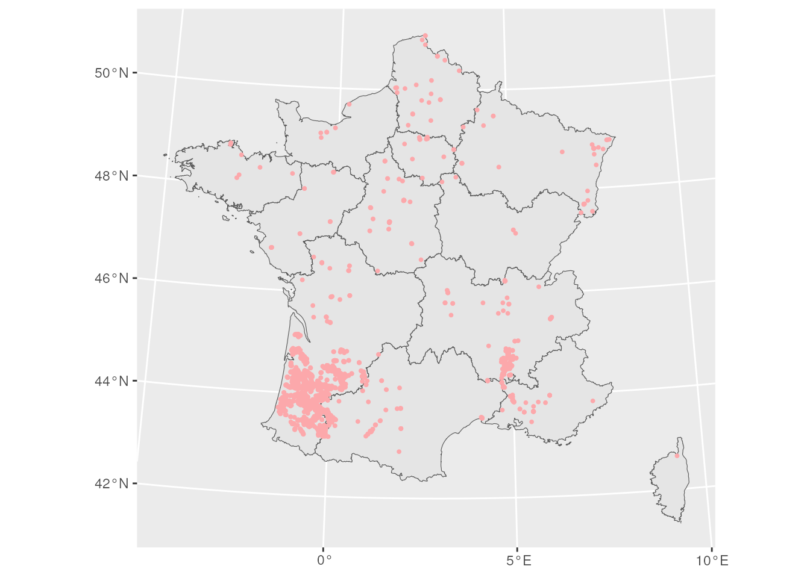

Le changement climatique aura des changements importants sur les cultures en France, en particulier à cause de la diminution des précipitations dans certaines régions au cours des années à venir. Dans cette application, on souhaite identifier les cultures avec le niveau de risque le plus élevé.
3.1 Données
Le RPG recense les parcelles déclarées à la PAC par les agriculteurs, leurs informations graphiques et leur culture principale. Ces données sont mises à disposition dans une base de données PostgreSQL.
Le projet Drias a pour vocation de mettre à disposition des projections climatiques réalisées dans les laboratoires français de modélisation du climat (IPSL, CERFACS, CNRM). En particulier, nous disposons de projections locales du modèle CNRM-CM5 / ALADIN63 / correction ADAMONT. Ces données sont aussi mises à disposition sur PostgreSQL.
3.2 Visualisations
Code
library(RPostgres)library(dplyr)library(aws.s3)library(ggplot2)library(raster)library(sf)library(janitor)library(knitr)# pour avoir les noms de dates en françaisinvisible(Sys.setlocale("LC_ALL", "fr_FR.UTF-8"))options(knitr.kable.NA ="")cnx <-dbConnect(Postgres(),user ="projet-funathon",password =Sys.getenv("PASS_POSTGRESQL"),host ="postgresql-438832",dbname ="defaultdb",port =5432,check_interrupts =TRUE)
On souhaite tout d’abord visualiser les données DRIAS. On peut passer par les données sauvegardées au format raster qui sont stockées dans l’espace de stockage du SSP Cloud. Ces données correspondent à des prévisions à horizon proche (2021-2050) dans un scénario sans réduction des gaz à effet de serre, la période de référence étant 1976-2005.
Les variables disponibles dans les données DRIAS sont systématiquement calculées sur la période 2021-2050 (préfixe NOR), et en écart avec la période de référence (préfixe A) : - RRA : cumul de précipitations d’avril à octobre (mm) - STM6 : somme de température base 6°C d’avril à octobre (°C) - STM0 : somme de température base 0°C d’octobre (année-1) à juillet (année) (°C) - SDA : nombre de jours d’été d’avril à juin (jour(s)) - DATEVEG : date de reprise de végétation en jour julien (date) - DATEDG : Date de dernière gelée avec 1er juillet comme référence (date) - DATEPG : Date de première gelée avec 1er juillet comme référence (date)
On visualise la variable ARRA, qui correspond à l’écart de cumul de précipitations d’avril à octobre en mm.
Code
# Bande ARRAdrias_raster_arra <-s3read_using(function(f) readAll(raster(f, band =8)),object ="2023/sujet2/resultats/drias.tif",bucket ="projet-funathon",opts =list("region"=""))# Avec palette custompalette <-c("#1457ff", "#3c9aff", "#6dc4ff", "#a8e1ff", "#dff1fb", "#f8e9eb", "#fca8ab", "#f9575d", "#f2060b", "#a20102")breaks <-c(-200, -160, -120, -80, -40, -0, 40, 80, 120, 160, 200)raster::plot(x = drias_raster_arra,col =rev(palette),breaks = breaks,main ="Ecart de cumul de précipitations d'avril à octobre (mm) entre 2021-2050 et 1976-2005")
Sur la période 2021-2050, les précipitations vont augmenter presque partout, sauf Sud-Ouest de la France (détails…).
3.3 Requêtes PostgreSQL
Les données sont également stockées dans une base PostgreSQL qu’il est possible de requêter. La table drias.previsions contient une grille équivalente aux données raster précédemment utilisées.
3.4 Appariement spatial entre données DRIAS et RPG
On souhaite effectuer cet appariement pour obtenir par carreau de la grille DRIAS la surface de parcelles pour chaque type de culture.
Code
# On récupère par carreau de la grille DRIAS la surface pour chaque type de culturequery <-"SELECT B.point, code_cultu, Sum(surf_parc) AS surface, B.arraFROM rpg.parcelles AS AJOIN drias.previsions AS BON ST_Intersects(A.geom , B.geometry)GROUP BY B.point, B.arra, code_cultu"res <-dbSendQuery(cnx, query)arra_df <-dbFetch(res)arra_df %>%head(10) %>%kable()
point
code_cultu
surface
arra
5343
CZH
78.79
10.30
4803
BTH
18.06
23.71
3903
BTA
25.21
-36.38
3498
VRG
10.59
0.66
5078
VRN
0.65
12.48
4939
ORH
186.01
10.59
3624
TTH
90.12
-13.35
4636
FAG
0.80
35.12
5108
J6S
5.05
0.70
4640
VRG
0.31
23.72
On a récupéré une table avec la surface par type de culture pour chaque carreau de la grille.
3.5 Calcul d’indicateurs par type de culture
On peut maintenant calculer un écart moyen de cumul de précipitation (d’avril à octobre) par unité de surface pour chaque culture, afin identifier celles qui seront impactées par des baisses de précipitations à horizon proche.
Code
# Récupération des libellés des codes cultureculture_mapping <-s3read_using(FUN = read.csv,sep =";",object ="2023/sujet2/ign/rpg/CULTURE.csv",bucket ="projet-funathon",opts =list("region"=""))# On aggrège au niveau national par code culture et on calcule un écart# moyen du cumul par m2agg_arra_df <- arra_df %>%group_by(code_cultu) %>%summarise(ecart_volume_precip =sum(surface * arra), surface =sum(surface)) %>%mutate(ecart_cumul_moyen = ecart_volume_precip / surface)# Récupération des 10 cultures avec une forte perte de précipitationagg_arra_df %>% dplyr::left_join(culture_mapping, by =c("code_cultu"="Code")) %>%arrange(ecart_cumul_moyen) %>%head(10) %>%kable()
code_cultu
ecart_volume_precip
surface
ecart_cumul_moyen
Libellé
PVP
-13726.4694
346.56
-39.607772
Poivron / Piment
MID
-310201.4660
26283.67
-11.802061
Maïs doux
SGE
-24903.3477
3327.82
-7.483382
Sauge
ARA
-541.0369
76.50
-7.072378
Arachide
LAV
105054.4076
35387.95
2.968649
Lavande / Lavandin
SPH
6608775.8514
2041360.68
3.237437
Surface pastorale - herbe prédominante et ressources fourragères ligneuses présentes
VAL
107.8679
31.53
3.421120
Valériane
PAQ
158.4835
26.45
5.991815
Pâquerette
CRN
70.0155
10.77
6.500975
Cornille
NVH
180.2147
25.00
7.208588
Navette d’hiver
Le maïs doux est une culture qui sera touchée par les baisses de précipitations à horizon proche. Où sont situées les parcelles de maïs doux ?
Code
# Frontières régionales de métropoleregion_sf <-st_read( cnx, query ="SELECT * FROM adminexpress.region")region_sf <- region_sf %>%st_transform("EPSG:2154")region_sf <- region_sf %>% dplyr::filter(!(insee_reg %in%c("03", "04", "06", "01", "02", "01_SBSM")))# Parcelles de maïs douxquery_mid <-"SELECT id_parcel, geomFROM rpg.parcellesWHERE code_cultu = 'MID'"cultures_mid <-st_read(cnx, query = query_mid)ggplot() +geom_sf(data = region_sf) +geom_sf(data =st_buffer(cultures_mid, 5000), fill ="#fca8ab", color =NA)

On observe en effet beaucoup de parcelles dans le Sud-Ouest où des baisses de précipitations sont attendues à horizon proche.
Code source
---title: "Cultures et prévisions climatiques"pagetitle: "Prévisions"keywords: ["RPG", "prévisions, cultures"]number-sections: trueknitr: opts_chunk: dev: "ragg_png" out.width: 100%---Le changement climatique aura des changements importants sur les cultures en France, en particulier à cause de la diminution des précipitations dans certaines régions au cours des années à venir. Dans cette application, on souhaite identifier les cultures avec le niveau de risque le plus élevé.## Données- Le [RPG](https://geoservices.ign.fr/rpg) recense les parcelles déclarées à la PAC par les agriculteurs, leurs informations graphiques et leur culture principale. Ces données sont mises à disposition dans une base de données PostgreSQL.- Le projet [Drias](https://www.drias-climat.fr/) a pour vocation de mettre à disposition des projections climatiques réalisées dans les laboratoires français de modélisation du climat (IPSL, CERFACS, CNRM). En particulier, nous disposons de projections locales du modèle CNRM-CM5 / ALADIN63 / correction ADAMONT. Ces données sont aussi mises à disposition sur PostgreSQL. ## Visualisations```{r}#| label: setup#| echo: truelibrary(RPostgres)library(dplyr)library(aws.s3)library(ggplot2)library(raster)library(sf)library(janitor)library(knitr)# pour avoir les noms de dates en françaisinvisible(Sys.setlocale("LC_ALL", "fr_FR.UTF-8"))options(knitr.kable.NA ="")cnx <-dbConnect(Postgres(),user ="projet-funathon",password =Sys.getenv("PASS_POSTGRESQL"),host ="postgresql-438832",dbname ="defaultdb",port =5432,check_interrupts =TRUE)```On souhaite tout d'abord visualiser les données DRIAS. On peut passer par les données sauvegardées au format raster qui sont stockées dans l'espace de stockage du SSP Cloud. Ces données correspondent à des prévisions à horizon proche (2021-2050) dans un scénario sans réduction des gaz à effet de serre, la période de référence étant 1976-2005.```{r}#| label: get-drias-rasterdrias_raster <-s3read_using(function(f) readAll(brick(f)),object ="2023/sujet2/resultats/drias.tif",bucket ="projet-funathon",opts =list("region"=""))drias_df <-as.data.frame(drias_raster, xy =TRUE) %>% tidyr::drop_na()colnames(drias_df) <-c("x","y","NORRRA","NORSTM6","NORSTM0","NORSDA","NORDATEVEG","NORDATEDG","NORDATEPG","ARRA","ASTM6","ASTM0","ASDA","ADATEVEG","ADATEDG","ADATEPG","ALTI")drias_df %>%head(10) %>%kable()```Les variables disponibles dans les données DRIAS sont systématiquement calculées sur la période 2021-2050 (préfixe NOR), et en écart avec la période de référence (préfixe A) :- RRA : cumul de précipitations d'avril à octobre (mm)- STM6 : somme de température base 6°C d'avril à octobre (°C)- STM0 : somme de température base 0°C d'octobre (année-1) à juillet (année) (°C)- SDA : nombre de jours d'été d'avril à juin (jour(s))- DATEVEG : date de reprise de végétation en jour julien (date)- DATEDG : Date de dernière gelée avec 1er juillet comme référence (date)- DATEPG : Date de première gelée avec 1er juillet comme référence (date)On visualise la variable ARRA, qui correspond à l'écart de cumul de précipitations d'avril à octobre en mm.```{r}#| label: drias_vis_raster# Bande ARRAdrias_raster_arra <-s3read_using(function(f) readAll(raster(f, band =8)),object ="2023/sujet2/resultats/drias.tif",bucket ="projet-funathon",opts =list("region"=""))# Avec palette custompalette <-c("#1457ff", "#3c9aff", "#6dc4ff", "#a8e1ff", "#dff1fb", "#f8e9eb", "#fca8ab", "#f9575d", "#f2060b", "#a20102")breaks <-c(-200, -160, -120, -80, -40, -0, 40, 80, 120, 160, 200)raster::plot(x = drias_raster_arra,col =rev(palette),breaks = breaks,main ="Ecart de cumul de précipitations d'avril à octobre (mm) entre 2021-2050 et 1976-2005")```Sur la période 2021-2050, les précipitations vont augmenter presque partout, sauf Sud-Ouest de la France (détails...).## Requêtes PostgreSQL Les données sont également stockées dans une base PostgreSQL qu'il est possible de requêter. La table `drias.previsions` contient une grille équivalente aux données raster précédemment utilisées.```{r}#| label: drias_vis_postgresqlquery <-"SELECT *FROM drias.previsions"drias_sf <-st_read(cnx, query = query)ggplot() +geom_sf(data = drias_sf, aes(fill = arra), color =NA) +binned_scale(aesthetics ="fill", scale_name ="custom", palette = ggplot2:::binned_pal(scales::manual_pal(values =rev(palette)[-1])),guide ="bins",breaks = breaks)```## Appariement spatial entre données DRIAS et RPGOn souhaite effectuer cet appariement pour obtenir par carreau de la grille DRIAS la surface de parcelles pour chaque type de culture.```{r}#| label: spatial-join# On récupère par carreau de la grille DRIAS la surface pour chaque type de culturequery <-"SELECT B.point, code_cultu, Sum(surf_parc) AS surface, B.arraFROM rpg.parcelles AS AJOIN drias.previsions AS BON ST_Intersects(A.geom , B.geometry)GROUP BY B.point, B.arra, code_cultu"res <-dbSendQuery(cnx, query)arra_df <-dbFetch(res)arra_df %>%head(10) %>%kable()```On a récupéré une table avec la surface par type de culture pour chaque carreau de la grille.## Calcul d'indicateurs par type de cultureOn peut maintenant calculer un écart moyen de cumul de précipitation (d'avril à octobre) par unité de surface pour chaque culture, afin identifier celles qui seront impactées par des baisses de précipitations à horizon proche. ```{r}#| label: aggregation-culture# Récupération des libellés des codes cultureculture_mapping <-s3read_using(FUN = read.csv,sep =";",object ="2023/sujet2/ign/rpg/CULTURE.csv",bucket ="projet-funathon",opts =list("region"=""))# On aggrège au niveau national par code culture et on calcule un écart# moyen du cumul par m2agg_arra_df <- arra_df %>%group_by(code_cultu) %>%summarise(ecart_volume_precip =sum(surface * arra), surface =sum(surface)) %>%mutate(ecart_cumul_moyen = ecart_volume_precip / surface)# Récupération des 10 cultures avec une forte perte de précipitationagg_arra_df %>% dplyr::left_join(culture_mapping, by =c("code_cultu"="Code")) %>%arrange(ecart_cumul_moyen) %>%head(10) %>%kable()```Le maïs doux est une culture qui sera touchée par les baisses de précipitations à horizon proche. Où sont situées les parcelles de maïs doux ?```{r}#| label: localisation-mais# Frontières régionales de métropoleregion_sf <-st_read( cnx, query ="SELECT * FROM adminexpress.region")region_sf <- region_sf %>%st_transform("EPSG:2154")region_sf <- region_sf %>% dplyr::filter(!(insee_reg %in%c("03", "04", "06", "01", "02", "01_SBSM")))# Parcelles de maïs douxquery_mid <-"SELECT id_parcel, geomFROM rpg.parcellesWHERE code_cultu = 'MID'"cultures_mid <-st_read(cnx, query = query_mid)ggplot() +geom_sf(data = region_sf) +geom_sf(data =st_buffer(cultures_mid, 5000), fill ="#fca8ab", color =NA)```On observe en effet beaucoup de parcelles dans le Sud-Ouest où des baisses de précipitations sont attendues à horizon proche.